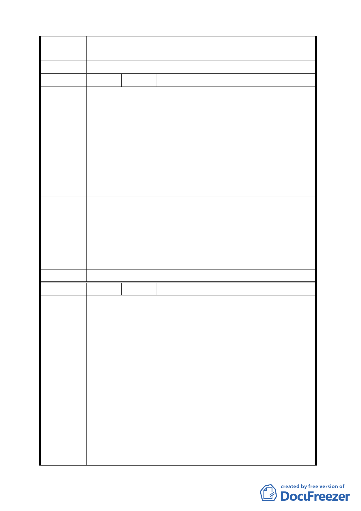

專案小組
審 查 結 論 同編號 1。
委員會決議 同編號 1。
編 號 ３ 陳情人 林舜民、林清和（住二）
一、土地標示:北投區秀山段三小段旱 279 旱 286 地號、北投
區秀山段三小段田 285 田 288 旱 276 旱 278 地號。
二、經查土地使用強度由低變高(例如商三變更為商三特)政
府要求土地所有權人回饋，本人所有土地由使用強度高
陳情理由
變為使用強度低之保護區政府應比照上列辦法補償本人
損失。
三、本人以高出保護區價格約 4~5 倍之價格購得本土地,今政
府突然欲將其變為保護區,致使本人遭受巨額損失,請訂
出補償辦法。
一、政府政策改變致使本人金錢遭受嚴重損失,請訂出補償措
建議辦法
施以減少民怨.。
二、請准予本案保變住公告實施後所購得之土地准予本土地
可容積移轉以減少本人損失。
專案小組
審查結論
同編號 1。
委員會決議 同編號 1。
編 號 ４ 陳情人 葉茂宏、何秋敏（住二）
一、土地標示:北投區秀山段三小段 394.395.399.398.400 地
號、北投區秀山段三小段 398 地號。
二、依貴府 94 年 6 月 9 日府都規字第 094313545800 號公告
內容將「所謂」不適宜開發之第一類山坡地住宅區朝向
回復為保護區之方式辦理,本人認為決策過程草率,嚴重
損害陳情人權益,特此敘明如後。
陳情理由
三、此次所作之保變住地區都市計畫通盤檢討案中、將 23 處
保變住地區依其土地適宜性(坡度、環境敏感地質資
料) 、使用現況、分佈區位、有無細部計畫等概分為 4
類,據此作成將第一類地區回復為保護區之決議,但究其
評估資料,僅僅是有建設局委託工業技術研究院辦理而
得,姑不論受託者之立場是否絕對公正、能力是否足夠、
但就此影響到數以萬計市民權益之重大事項而言、是否
流於草率?本人強烈要求貴府應再委託兩家學術機構進
七